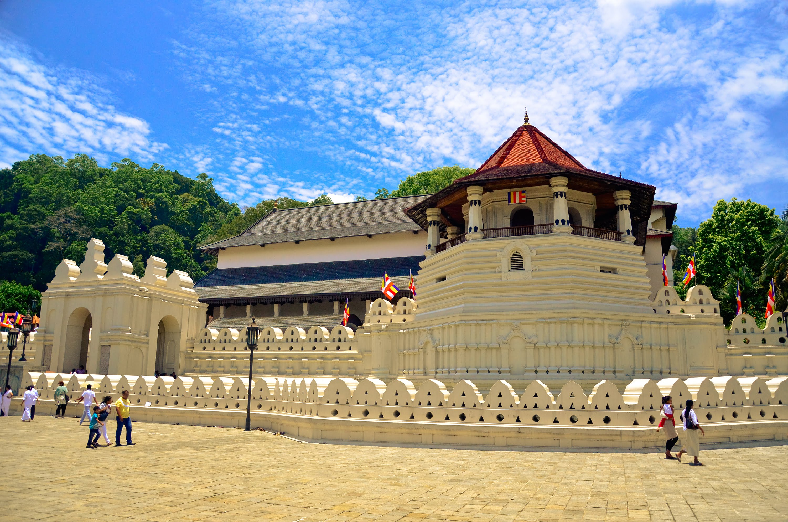

Tour Start
Title description : Any months of the year
Anuradhapura / Mihinthale / Habarana
Breakfast proceed to Mihintale.
Arrive in Trincomalee and check-in to the hotel.
Overnight stay at hotel in Trincomalee.
Mihintale is where Buddhism was first introduced to Sri Lanka. Mihintale is regarded as the cradle of Buddhism in Sri Lanka.
The rock is home to many shrines and rock dwellings. A grand stairway
of 1,840 steps made out of granite slabs 15” wide leads to the summit from where one could get a splendid view of the
surrounding countryside.
On the way to Habarana visit Dambulla Cave Temple.
Dambulla is a vast isolated rock mass 500ft high and a mile around the base.
Here is found the famous Rock Temple dating to the First century BC. The caves of Dambulla sheltered the
King Walagamba during his 14 years of exile from Anuradhapura. When he regained the throne he built the most
magnificent of rock temples to be found on the island.
Proceed to Habarana and overnight stay at a hotel in Habarana.
Journey
Title description : Enjoy yourself
Habarana / Sigiriya / Matale / Kandy
Proceed to Sigiriya Rock fortress after breakfast.
The magnificent 5th century A.D. rock-fortress citadel of a fugitive king, where history merges with melodrama.
A gallery of frescoes of shapely be-jewelled maidens still glows with vibrant colour. It is believed these paintings
depict the “apsaras” or goddesses and some say it represents the lightning and clouds. Another distinctive feature
of Sigiriya is the Mirror Wall which is located just below the paintings. The surface of this wall is well polished
and covered with writings known as “Sigiri Graffiti” which are a form of poems. The Lion Staircase leads to the summit
and the special feature of this is the massive Lion Paw which is carved out of rock. The brick wall is still preserved
in its original form. Sigiriya is being currently excavated and restored by
UNESCO under the Cultural Triangle Project and according to sources is most likely to be declared as a Wonder of the World.

Day 13
Kandy / Colombo
At Pinnawala Sri Lanka
After breakfast in Kandy proceed to Colombo. On the way to Colombo visit Pinnawala Elephant Orphanage.
The Pinnawala Elephant Orphanage, established in 1975, commenced with seven orphans. Today some of these orphans enjoy
the fortune of seeing their grandchildren born in the same location. The original objective of establishing the orphanage
inclined more towards tourism, but it soon became a conservation and educational centre.
With the help of local and foreign elephant experts, Pinnawala started a scientific captive-breeding program for elephants.
Check in to a hotel in Colombo.
Evening visit Kelaniya Temple and Gangarama Temple with Colombo city tour.
Colombo is the commercial capital of Sri Lanka – it is the traditional gateway to the Orient. Colombo which has a population
of over a million distributed over fifteen zones, has three main zones, each of which has a distinctive character. Fort,
the centre of metropolitan activity, Pettah the bustling bazaar area and the old Cinnamon Gardens, now fashionably known as
Colombo 7 with its spacious mansions and better residential areas.